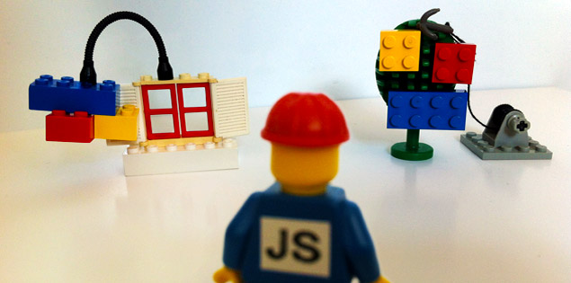
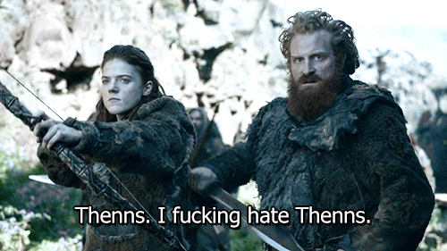

If you like it
then you shoulda put a test on it
Modern acceptance testing
Why bother?
refactoring
refactorCodeExamples()
refactorSlides()
dontForgetToHowToSpeak()
prepareForPresentation()
<!-- TODO: Improve presentation -- >
documentation
Can't you just use $lib?
Context switching
var foo = 'foo';
//dammit!
String foo = "foo";
slooooooooooooooooooow
non-deterministic failures
x-browser woes

infrastructure maintenance
maven and java badness redundant dependencies
selenium-webdriver on node

'nightwatch' : function (client) { client .url('https://www.github.com/') .pause(2000) .assert.attributeEquals('octocat', 'src', 'octocat.png') .end();
'dalek' : function (test) { test .open('https://www.github.com/') .waitFor('!!github.ready') .assert.attr('octocat', 'src', 'octocat.png') .done();
'intern' : function () { return this.remote .get('https://www.github.com/') .waitUntilTrue('!!github.ready') .elementById('octocat') .getAttribute('src') .then( function (src) { expect(src).to.equal('octocat.png'); });
webdriver-based
expressive chainable interface
BDD-style
node
AMD vs. commonjs
external config
customisation
what's missing?
debugging challenges
